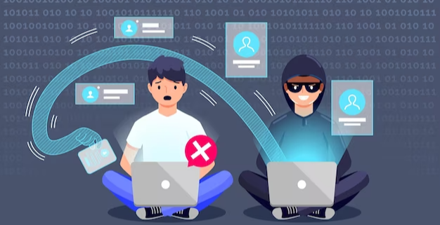

Save Yourself With These Useful Spear
Phishing Prevention Tips
Spear phishing is a social engineering attack in which an attacker sends malicious emails to specific individuals or organizations. The attacker carefully researches the target so that the email appears to come from a trusted sender.
Spear phishing emails typically use various social engineering techniques to convince the recipient to open a malicious link or attachment. Once the target complies, the attacker can achieve their initial goal.
Spear Phishing Attacks Typically Aim To:

- Extract personal information: Some spear phishing emails seek personal information from recipients, such as login credentials, banking information, or credit card numbers.
- Install malware: Other spear phishing emails deliver malware to recipients hoping they will download it onto their devices.
- Unlike phishing scams: which cast a wide net, spear phishing is more sophisticated and coordinated. These attacks often rely on using familiar, personalized information to infiltrate organizations with customized traps.
How Does Spear Phishing Work?
Threat actors rely on reconnaissance techniques to increase the likelihood of a successful attack. As a result, spear phishing emails are often challenging to spot.
Spear phishers may frequent social media sites such as Facebook or LinkedIn to gather personal information about their target. Some threat actors even map out their target’s network of personal and professional contacts for additional context when crafting a “trustworthy” message. Sophisticated attackers even use machine learning algorithms to scan massive amounts of data and identify potentially lucrative targets.
Types Of Spear Phishing
There’s a litany of different techniques and types of phishing scams out there. Let’s look at a few techniques frequently seen in spear phishing campaigns:
- Angler phishing, hackers will target users who interact with companies on social media platforms like Twitter or LinkedIn. Posing as company representatives, they'll address complaints or offer deals. If you're contacted by someone claiming to be from a company on one of these platforms, take steps to confirm their identity before interacting.
- Business email compromise (BEC), attackers gain unauthorized access to a business email account or create a lookalike account. They'll then impersonate the account owner to send phishing messages to the owner's colleagues or partners. These types of attacks are often paired with wire fraud.
- Whaling: These types of attacks are when an attacker's target is a member of an organization that likely has privileged access, such as a senior-level executive.
- CEO fraud: This form of BEC attack is closely related to whaling, where the attacker impersonates an organization's CEO.
- Clone phishing: Phishers send victims emails that seem to be from senders the victim trusts, such as financial institutions or business services. This type of attack often also indicates that the spear phishers have some measure of access to the victim’s email account.
Spear Phishing Prevention Best Practices
Take note of these basic guidelines to reduce your overall risk:
- Keep operating systems and browsers up to date. Software providers regularly address newfound vulnerabilities in their products, without which your system will be left exposed.
- Protect data with automatic backups. Implementing a regular process of system data backup will ensure you can more easily recover in the event of a breach.
- Use multifactor authentication (MFA). Zero trust strategies such as MFA, enforced across your organization, create additional layers of defense between attackers and your internal systems.
- Follow tight security protocols. Enforce a strong password policy, establish rules about organizational information employees are allowed to share on social networks, and ensure effective countermeasures are in place. Modern security software and effective spam filters will screen out many phishing attempts before they even reach your users’ inboxes.
- Ensure your users are educated. Email security won’t catch everything. Your users and your organization at large will be safer if all users understand the basics of how to identify suspicious email messages, report phishing, and avoid downloading malicious attachments.
In conclusion, spear phishing is a form of cyber attack that targets individuals or companies in an effort to gain access to sensitive information or financial data. Spear phishing attacks are on the rise and can have serious consequences for businesses and individuals. It is important to be aware of the risks posed by this type of attack and to take steps to protect yourself, such as using strong passwords, using two-factor authentication, and monitoring your accounts regularly.